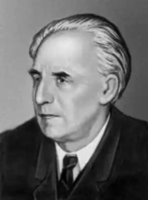
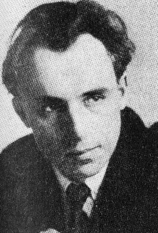

Петро Панч − новеліст, повістяр і романіст, автор казок для дітей. Свої перші твори опублікував тоді, поли йому було тридцять років, кола мав за плечима чималий життєвий багаж
Справжнє прізвище письменника Петро Йосипович Панченко.
Народився він 4 липня 1891 року в м. Валках на Харківщині в родині майстра-колісника. Дитинство письменника, про нас. піп. зворушливо написав у книзі "На калиновім мотсі", було багатим на життєві враження. З п'ятнадцяти літ, після двокласної школи, пішов працювати. Спершу служив у Народному домі, який належав "Товариству тверезості", переписував папери і розносив пакети, а згодом − писарчуком в агента земського стархування. Сімнадцятирічним юнаком Папч уперше, залишає рідну домівку і їде до Харкова шукати долі. Тут його взяли на посаду писарчука до канцелярії Інституту шляхетнію дівчат. У Харкові П. Панч потрапляє в коло студентської молоді. Він відвідує загальноосвітні курси, дуже багато читак. Проте згодом залийте, місто і вступає до Полтавського землемірного училища, одразу після закінчення якого у 1915 році був мобілізований в армію. Він навчається на прискорених курсах в Одеському артилерійському училищі, дістає офіцерське звання прапорщика артилерії і отіняється на фронті першої світової війни. Восени 1921 року П. Панч демобілізувався і приїхав у рідні Валки, де працює, землеміром. На цей час припадає і початок літературної діяльності П. Панча. У валківській газеті "Незаможник". а далі в газетах "Вісті". Селянська правда, з'являються його перші нариси. оповідання фестони, "житні етюди" псевдонімом− Максим Отава. Подаючи матеріали в орловський "Незаможник" П Панчепко підписв їх скорочено П. Пап. Але оскільки йшла боротьба з панами, то редактор уникнув небезпечного прізвища виправивши його на Панч. У 1923 році Панч переїхав до Харкова, тодішньої столиці України, і захоплюю віддався творчості. Працював у журналі "Червоній шлях". Одна за одною вводять його книжки Taм де верби над ставом", "Грізда старі" (1923), "Поза життям" (1924), "Солом’яний дим" (1924), Мишачі нори" (1926) та ін. Належав П.Панч у цей час до літературних угруповань "Плуг", ЗАПЛІТЕ, "ВУСАА", 1928 року виходить збірка повістей "Голубі ешелони". Через 20 років (1947 р.) Панч зазнає жорстокого звинувачення за цю книгу, і наступні редакції зміняють її ідейно-художній зміст. Преший роман П. Панча "Право на смерть" (1933) відразу ж був підданий "розносові" і згодом поспішно перероблений вийшов пів назвою "Облога ночі" (1935). В 30-х роках П. Панч, після судового процесу над СПУ штучно" голодомору, напорет касових репресій "розробляє" історико-революційні теми для дітей і про дітей, "правильних" ідейних позицій "Малий партизан" (1933), "Будемо літати" (1935), "Син Таращанського полку, (1937). У 1939−1940 роках він очолював Львівську письменницьку організацію. У роки Великої Вітчизняної війни працює в Уфі потім − головним редактором літературного відділу радіостанції "Радянська Україна" в Москві. Творчий доробок письменника цих років – книга оповідань "Рідна земля", "Гнів матері", книга фейлетонів "Зозуля", "Кортить кумі просо". У 1954 році у сеті один із кращих творів української прози — роман "Гомоніла Україна". У 1965 році П. Панч створює "повість своїх минулих літ" — роман "Па кминовій масті. Цей твір відзначений Шевченковою премією. Він є своєрідним сплавом автобіографічного, документального та художнього матеріалу. Кращі розповіді із нього про дитинство майбутнього письменника люблять штати діти. (Розповідь "Три копійки"). Творять для дітей-окрема сторінка в доробку письменника. Ще 1922 року він написав невеличкий етюд "Свистуни", а в 1924 році в журналі "Червоні квіти" з’явилося оповідання "Портрет". V 30-х ропах побачили світ дитячі книжки "Гиля, гуси", "Вовчий хвіст" (1934). "Будемо літати!" (1935). Пізніше − "Гарні хлопці" (I959). "Для вас і про вас" (1965) та ін. Остання книга П. Панча − збірка статей та етюдів-спогадів "Відлітають журавлі" вийшла 1973 роки. 1 грудня 1978 ропу Петро Папч помер. Його творчість − приклад мистецької послідовності, великої совісності, дотримання неухильних вимог правди за різних обставин. Значний внесок письменник зробив у розвиток дитячої літератури. "Любові до літератури треба привчати людину змалечку, література повинна входити в свідомість разом зі словом і піснею матері",− згадував слова Петра Панча Ю. Збанацький. Ще в тридцяті роки Петро Панч написав для дітей багато оповідань та повість "Син Таращанського полку", якій судилось стати однією з найулюбленіших книжок юних читачів, а в повоєнні роки − повісті "Червоні галстуки", "Ерик шукає щастя" та ін. Навіть з невеликої частини творів, які вміщені в збірці для дітей, можна здобути уявлення про основні події історії нашого краю. Починаючи від дожовтневих часів, стежки його творів ведуть до усвідомлення закономірності перемоги народу у боротьбі за справедливість і щастя. Ось автобіографічне оповідання "Три копійки". Воно приваблює ліризмом спогадів про дитинство, тонким розумінням дитячої психології. Разом з тим і з сюжету, і з конкретних деталей у читача виникає уявлення про важкі умови селянського дореволюційного життя. Кожна тварина мае свої звички, свої особливості. В центрі більшості оповідань − вірний чотириногий друг людини − собака. Письменник цінує в ньому розум, свого роду гідність, здатність бути вдячним. Твори про тварин мають повчальне, виховне спрямування, проте цікаві вони і як тонкі спостереження автора над поведінкою тварин (наприклад, оповідання "Брус"). Від спілкування з розумною, доброю твариною і людина стає лагіднішою і в той же час твердою, відданою. В оповіданні "Валет" розповідається про незвичайний випадок. Раптовий прояв собачої самопожертви схвилював людей, дав бійцям мужності й хоробрості, якої Км не вистачало для атаки. Оповідання в творчості Петра Панча посідають особливе місце. З них він розпочав свою літературно-художню діяльність, оповідання продовжував писати, вже надрукувавши багато повістей, і серед них усім відомі "Голубі ешелони" і "Олександр Пархоменко", не залишив цього жанру письменник і після створення роману "Гомоніла Україна". Оповіданнями в автобіографічній книзі "На калиновім мості" підвів Петро Панч висновки своєму творчому шляхові. В малому епічному жанрі виявилась художня майстерність автора, його вміння вихопити з життя, на перший погляд, здавалося б, і незначний конкретний факт, подію, і довести їх до широкого узагальнення людських стосунків, типів, дати читачеві глибоке уявлення про соціальний характер життя. Тут у пригоді письменнику стали тонке відчуття багатих можливостей мови, вміння стисло, точно і дохідливе висловити свої спостереження, кількома штрихами виразно намалювати неповторні особливі риси зовнішності людини, разом з тим відтворивши найхарактерніше, найтиповіше. "Мова − це дорогоцінний скарб, набутий протягом віків нашим народом, його невичерпне духовне багатство",− писав Петро Йосипович в одній із своїх статей '. Найбільш вдалі у Петра Панча мовні самохарактеристики персонажів і сатиричні портретні зарисовки. Навіть у невеликому уривку сцени допиту слідчим куркуля Кендюха з оповідання "Гриць і Микола" можна простежити довершеність портретної і мовної характеристики Панчем хитрого, підступного ворога Радянської влади, який прикидається ображеним темним мужиком. На початку допиту в нього зневажливий, глузливий тон нагло впевненого у своїй безкарності злочинця, потім з'являються улесливо-перелякані нотки, серед яких проскакують грубі інтонації й вирази, що викривають справжню хижацьку натуру куркуля. Іноді Панч вихоплює з життя смішні епізоди і включає в текст, здавалося б, не зв'язані з основним сюжетом комічні сцени. Проте вони надають творові характер конкретної життєвості, неповторної індивідуальності і забарвлюють його колоритом особливого авторського світосприймання. Нерідко в комічні ситуації потрапляють позитивні герої, як це сталося, наприклад, з Васильком і Грицьком у розвідці ("Син Таращанського полку"). Коли хлопчики поповзли по капустиці, Шарко подумав, що вони граються, і став весело гавкати і хапати їх за литки. Зустрічаються в творах Петра Панча і в'їдлива іронія, і сарказм. В оповіданні "Три копійки" письменник висміює закладену в селян постійним примусовим нагадуванням звичку молитися. Але тут можна помітити і співчуття до людей, адже не вони винні в їхній темноті й неосвіченості. І вже ніякого жалю немає в художника до тих, хто прийшов в чужу країну, щоб вбивати й грабувати. З гнівом і сарказмом письменник малює зовнішній портрет і внутрішню характеристику ворога. Розглядаючи поетику Панчевої новелістики, В. Г. Дончик висловив цікаву думку про природу гумору письменника. Дослідник вважає, що слід говорити "взагалі про гумористично-іронічний підхід до дійсності як складовий елемент Панчевої естетичної концепції, його тверезо-реалістичного, з остеріганням зайвої патетики, погляду на людину". Основною ознакою Панчевих творів є народність. Змалку заполонили душу майбутнього письменника любов до рідної землі, її чарівної природи, чудових пісень, влучної і мелодійної мови. Скарби ці потім розсипались дорогоцінним намистом по сторінках його творів. Але найбільше відчувається в творах письменника любов до людей (навіть уже в перших творах − любов до простого, неосвіченого, наляканого життям селянина-незаможника) і віра в людину, в її високі духовні можливості. Від уваги до "маленької" людини до усвідомлення величі народу, багатої історії його героїчної боротьби − такий творчий шлях Петра Панча. Письменники, критики, літературознавці, яким довелось зустрічатись з Петром Панчем, неодноразово згадували, з якою відповідальністю, серйозністю і вимогливістю ставився він до дитячої літератури. Петро Йосипович говорив, що, тільки працюючи над дитячими творами, він вперше з великою гостротою відчув надзвичайну відповідальність за кожну фразу, за кожний образ, за кожне слово. Письменник поважав в дітях не тільки людей .майбутнього, але й бачив у кожній дитині частку суспільства сьогоднішнього, якій можна і треба доручати важливі справи. Одна з таких справ, на його думку,− берегти історичну пам'ять народу. Петро Йосипович радив дітям записувати "з уст старих, бувалих людей розповіді про своє село, район, місто, про історію краю, сьогоднішні славні діла..." Стали хвилюючим художнім матеріалом для пізнання історії країни, нашого суспільства і ті життєві спостереження і роздуми, які залишив нам у спадщину Петро Йосипович Панч.